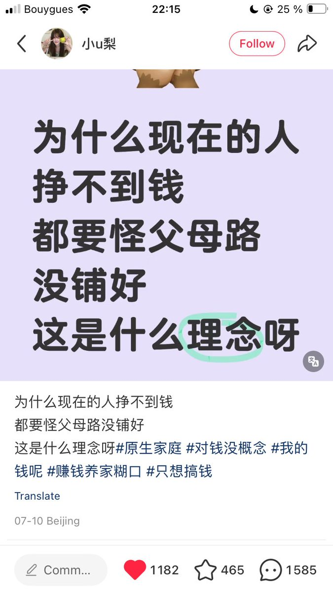
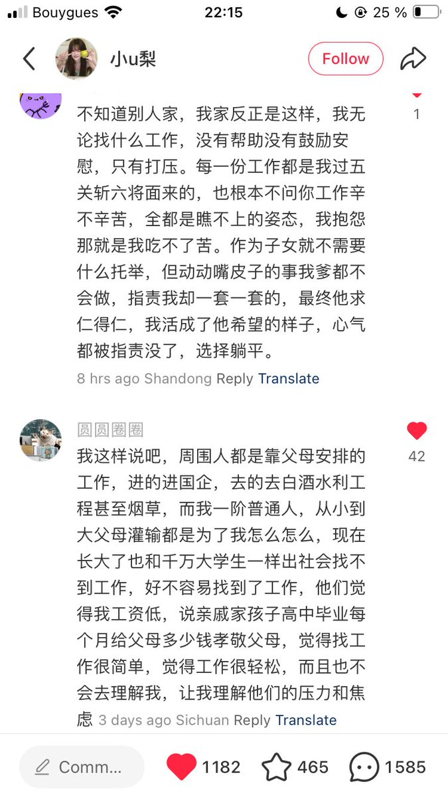
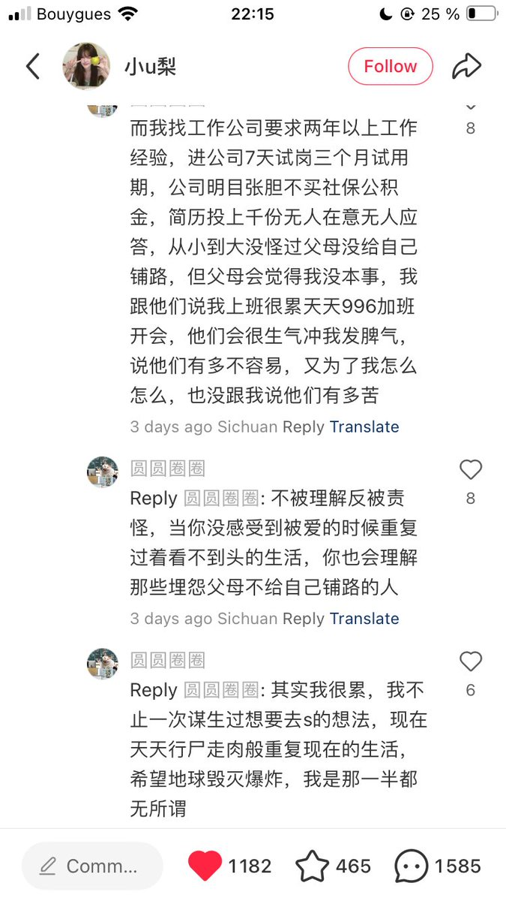
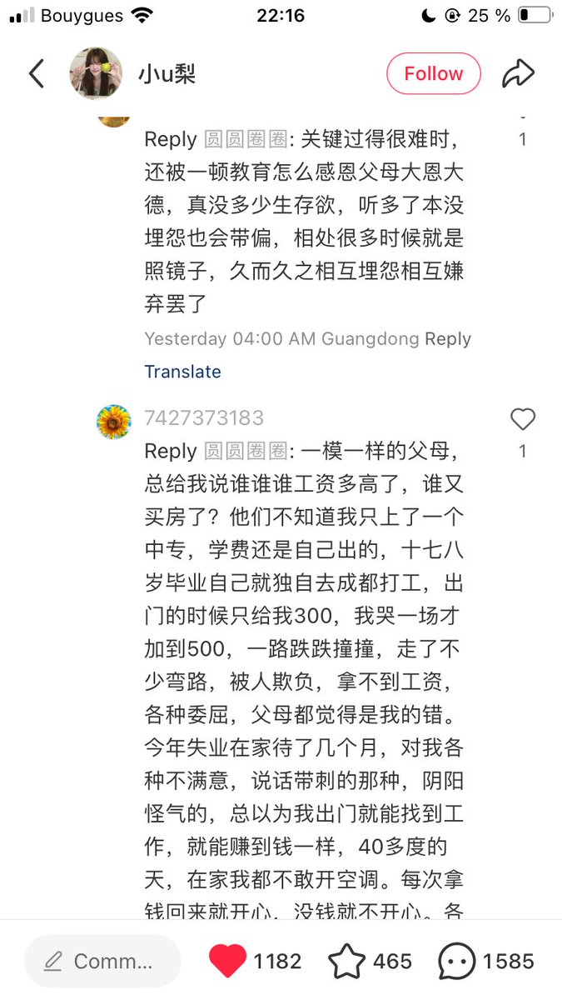

大狐帝国史官邹智萱（笔名段歌文）
@Rococo90933671
@garrulous_abyss 虽然我没有，但是我知道真正有爱的家庭是存在的，这种家庭确实是温暖的港湾，父母和孩子也可以互相满足情绪价值。只是这注定不属于我，我知道和他们保持相当的距离我才会好




garrulous abyss🌈
@garrulous_abyss
我还是那句话。对于已经经济独立的成年人而言，要跟父母少联系，要少跟父母说近况。
因为他们大概率帮不到任何忙，还喜欢评头论足、指手画脚，还来各种帮倒忙。 https://t.co/Se2121sHF1